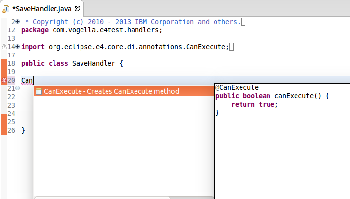

org.eclipse.core.runtime.jobs.Job class. These methods are particularly
convenient with lambdas. For example, to do an asynchronous resource refresh, you can write:
IResource resource = ...;
Job.create("Refreshing files",
monitor -> resource.refreshLocal(IResource.DEPTH_INFINITE, monitor)
).schedule();
If you want the job to be hidden from the user, you can write:
IResource resource = ...;
Job.createSystem(
monitor -> resource.refreshLocal(IResource.DEPTH_INFINITE, monitor)
).schedule();
org.eclipse.core.runtime.ICoreRunnable functional interface. This interface is
functionally equivalent and is intended as a replacement for
org.eclipse.core.resources.IWorkspaceRunnable. All new code should use
ICoreRunnable instead of IWorkspaceRunnable.
